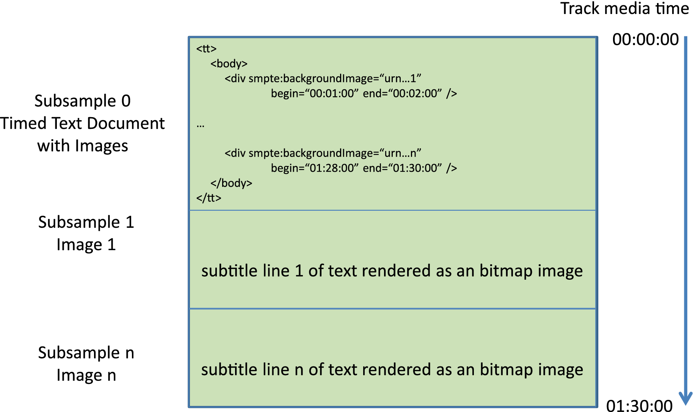

Foreword
This is a working draft of ISO/IEC 14496-30. It is maintained by the editors for review and contributions. It is not the official text: the standard as published by ISO/IEC is the only normative version.
This document was prepared by Technical Committee ISO/IEC JTC 1, Information technology, Subcommittee SC 29, Coding of audio, picture, multimedia and hypermedia information.
This second edition cancels and replaces the first edition (ISO/IEC 14496-30:2014), which has been technically revised. It incorporates ISO/IEC 14496-30:2014/Cor.1:2015. The main changes compared to the previous edition are as follows:
— all Clauses (except Clause 1 and Clause 3) and Annex A have been technically revised.
Introduction
This document defines a storage format based on, and compatible with, the ISO base media file format (ISO/IEC 14496-12), which is used by the MP4 file format (ISO/IEC 14496-14) and the Motion JPEG 2000 file format (ISO/IEC 15444-3) among others. This document enables timed text and subtitle streams to
- be used in conjunction with other media streams, such as audio or video;
- be used in an MPEG-4 systems environment, if desired;
- be formatted for delivery by a streaming server, using hint tracks; and
- inherit all the use cases and features of the ISO base media file format on which MP4 and MJ2 are based.
Information technology — Coding of audio-visual objects — Part 30: Timed text and other visual overlays in ISO base media file format
1 Scope
This document describes the carriage of some forms of timed text and subtitle streams in files based on ISO/IEC 14496-12 (the ISO base media file format). The documentation of these forms does not preclude other definition of carriage of timed text or subtitles; see, for example, 3GPP Timed Text (3GPP TS 26.245), or the carriage of captioning information embedded in a media stream of another type (see Annex A).
2 Normative references
The following documents are referred to in the text in such a way that some or all of their content constitutes requirements of this document. For dated references, only the edition cited applies. For undated references, the latest edition of the referenced document (including any amendments) applies.
- W3C Recommendation, Timed Text Markup Language 1.0, Second Edition, https://www.w3.org/TR/ttml1/
- ISO/IEC 14496-12:2015, Information technology — Coding of audio-visual objects — Part 12: ISO base media file format
- W3C Community Group Report, WebVTT, http://www.w3.org/2013/07/webvtt.html
- 3GPP TS 26.245:2017, Transparent end-to-end Packet switched Streaming Service (PSS); Timed text format
- IETF RFC 2141, URN Syntax
- IETF RFC 3986, Uniform Resource Identifier (URI): Generic Syntax
- IETF RFC 6381, MIME Codecs and Profiles
3 Terms, definitions and abbreviated terms
3.1 Terms and definitions
For the purposes of this document, the following terms and definitions apply.
ISO and IEC maintain terminological databases for use in standardization at the following addresses:
- ISO Online browsing platform: available at https://www.iso.org/obp
- IEC Electropedia: available at http://www.electropedia.org/
- 3.1.1timed text document
- file-based representation of textual content, possibly XML, used to produce timed text streams and possibly representing timed text track samples
- 3.1.2timed text stream
- stream of content, which when decoded results in textual content, possibly containing internal timing values, to be processed at a given presentation time and for a certain duration
- 3.1.3subtitle stream
- timed text stream potentially also presenting images
- 3.1.4internal timing value
- value contained in the payload of a timed text stream sample representing a time
- 3.1.5timed text track
- ISOBMFF representation of a timed text stream
- 3.1.6subtitle track
- ISOBMFF representation of a subtitle stream
3.2 Abbreviated terms
| TTML | Timed Text Markup Language |
| WebVTT | Web Video Text Tracks |
| ISOBMFF | ISO base media file format |
4 General definitions
4.1 Layout
This subclause defines common layout behaviour for processing of timed text or subtitle samples.
Unless specified by an embedding environment (e.g. an HTML page), the track header box information (i.e. width, height) shall be used to size the subtitle or timed text track content with respect to the associated track(s) as follows:
- 1) If the flag
track_size_is_aspect_ratiois not set, and the trackwidthandheightare set to values different from 0, the size of the timed text track shall be the trackwidthandheight. - 2) If the flag
track_size_is_aspect_ratiois not set, and the trackwidthandheightare set to 0, the size of the timed text track shall match the reference size. - 3) If the flag
track_size_is_aspect_ratiois set, it indicates that the content of the track was authored to an aspect ratio equal to the track headerwidth/height. In this case, neitherwidthnorheightshall be 0. The timed text track shall be sized to the maximum size that will fit within the reference size and should equal its width or height, while preserving the indicated aspect ratio.
If only one track is associated with the timed text track, the reference size is the size of the associated track. If multiple tracks are associated, the reference size is the size of the composition of tracks as described by the matrices in the track headers of the associated tracks.
Upon file creation, the width and height of the subtitle or timed text track should be set appropriately according to the width and height of the associated track(s), as declared in their track header. A typical usage is that the timed text or subtitle track has the same width and height as an associated visual track, and no translation.
If the track it is supposed to overlay is not stored in an ISOBMFF file or if it is stored as a track in a different ISOBMFF file, the values 0x0 may be used; or the track_size_is_aspect_ratio flag may be used and the width and height set to the desired aspect ratio.
For some timed text documents, the region as defined by the width, height and track_size_is_aspect_ratio corresponds to the visual area filled by the rendering of the timed text documents.
When the track width and height attributes are set to a value different from 0 and the track_size_is_aspect_ratio_flag is not used, additional region positioning using the translation values tx and ty from the track header matrix, as defined for 3GPP Timed Text tracks, may be used (3GPP TS 26.245:2017, 5.7 defines the text track region using tx, ty, and the track width and height).
Unless specified by an embedding environment (e.g. an HTML page), visually composed tracks including video, subtitle, and timed text shall be stacked or layered using the ‘layer’ value in the track header box. The layer field provides the same functionality as z-index in TTML.
4.2 Timing
This subclause defines common timing behaviour for processing of timed text or subtitle samples.
The general processing of timed text or subtitle tracks is that the text content of the sample is delivered to the decoder at the sample decode time, at the latest. The rendering of the sample happens at the presentation time, i.e. taking into account edit lists if any, and for the sample duration, potentially trimmed by the edit list if any.
NOTE As defined in ISOBMFF, the presentation is driven by the presentation time. The composition time is determined from the presentation time using the edit list (if present), and the sample active at that composition time is then processed. This specification assumes that at a given presentation time, the renderer is provided with the sample and the composition time, both of which correspond to the given presentation time.
However, timed text or subtitle sample data of specific formats may contain internal timing values. Internal timing values may alter the rendering of the sample during its duration as specified by the timed text or subtitle format.
The subclauses defining the storage of specific formats in the ISOBMFF specify how internal timing values relate to the track time or to the sample decode or composition time (see subclauses 5.3 and 6.3). For instance, start or end times may be relative to the start of the sample, or the start of the track.
For sections of the track timeline that have no associated subtitles or timed text content, ‘empty’ samples may be used, as defined for each format, or the duration of the preceding sample extended. Samples with a size of zero are not used.
The timescale field in the media header box should be set appropriately to achieve the desired timing accuracy. It is recommended to be set to the value of the timescale field in the media header box of (one of) the associated track(s).
4.3 Language
Timed text tracks should be marked with a suitable language in the media header box, indicating the audience for whom the track is appropriate. In the case where it is suitable for a single language, the media header must match that declared language. The value ‘mul’ may be used for a multi-lingual text.
4.4 Resources shared by multiple samples
Common resources, such as images and fonts that are referred to by URLs, may be stored as items in a MetaBox as defined by ISO/IEC 14496-12. These items may be addressed by using the item_name as a relative URL in the timed text sample, as defined by ISO/IEC 14496-12:2015, 8.11.9.
Fonts not supplied with the content may be already present on the target system(s), or supplied using any suitable supported mechanism (e.g. font streaming as defined in ISO/IEC 14496-18).
4.5 Associating timed text tracks
Timed text tracks may be explicitly or implicitly associated with other tracks in the file. They are explicitly associated with a track when the timed text track uses a track reference of type 'subt' to that track, as defined in ISO/IEC 14496-12, or to a track in the same alternate group. If no 'subt' track reference is used, the timed text track is said to be implicitly associated to all tracks in the file. In particular, if track groups are not used, the timed text track is associated to all tracks in the file. Association is used to indicate which track(s) a timed text track is intended to overlay and may be used to determine the desired rendered size when that information is not provided in the track header of the timed text track, as defined in subclause 4.1. Timed text and subtitle tracks may be associated with any type of track, including visual tracks (e.g. video tracks, graphics tracks, image tracks) or audio tracks as determined by some external context.
5 Timed Text Markup Language (TTML)
5.1 General
This subclause describes how documents based on TTML, as defined by the W3C, and derived specifications (for example SMPTE-TT), are carried in files based on the ISO base media file format. A TTML Track is a track carrying TTML documents, which can be documents that correspond to a specification based on TTML.
5.2 Layout
Subclause 4.1 defines the general layout behaviour for timed text and subtitle tracks. In particular, this means for TTML tracks that the track width and height provide the spatial extent of the root container, as defined in the TTML Recommendation. Any ‘extent’ attribute declared on the ‘tt’ element in the contained TTML document shall match the track width and height. If the ‘extent’ attribute is not declared on the ‘tt’ element in the contained TTML document, the track header width and height may be set to 0 or to any desired size.
Alternatively, when a resolution-independent document has been authored to a specific aspect ratio (whether or not the aspect ratio is explicitly signalled in the document) the track_size_is_aspect_ratio flag may be used to signal the authored aspect ratio. In this case, the track header width and height shall be set to values that indicate the authored aspect ratio (e.g. 16 by 9).
5.3 Timing
This subclause defines processing of timing information for TTML documents carried in a TTML track. The general timing processing defined in 4.2 applies, but specific aspects are refined in this subclause. Timing processing is defined only for TTML documents in which ttp:timeBase is ‘media’. For other values, timing processing behaviour is undefined and such documents should not be carried in TTML tracks.
When the rendering of a sample happens, the TTML document in the sample is provided to the TTML processor, together with the track composition time T of the sample and the sample composition duration d. The TTML processor then uses the interval together with the time coordinates produced by the “resolve timing” procedure, as defined in TTML, to determine which intermediate synchronic documents (ISDs) to present and for how long. Specifically, track composition time results in TTML ISD being presented, with .
The above concepts are illustrated in Table 1 and Table 2.
| Sample | Composition time | Duration | Payload |
| 1 | 00:00:00 | 00:30:00 |
<tt> <body> <div><p begin="00:01:00" end="00:02:00">1-2 minutes</p></div> </body> </tt> |
| 2 | 00:30:00 | 00:30:00 |
<tt> <body> <div><p begin="00:31:00" end="00:32:00">31-32 minutes</p></div> </body> </tt> |
| 3 | 01:00:00 | 00:30:00 |
<tt> <body> <div><p begin="00:00:00" end="04:00:00">60-150 minutes</p></div> </body> </tt> |
| 4 | 01:30:00 | 00:30:00 |
<tt> <body> <div><p begin="00:00:00" end="04:00:00">60-150 minutes</p></div> </body> </tt> |
| 5 | 02:00:00 | 00:30:00 |
<tt> <body> <div><p begin="02:00:00" end="02:30:00">60-150 minutes</p></div> </body> </tt> |
| 6 | 02:30:00 | 00:30:00 |
<tt> <body> <div><p begin="02:30:00">150 minutes onwards </p></div> </body> </tt> |
The sample composition times of the samples in Table 1 are 0 min, 30 min, 1 h, 1 h 30 min, 2 h, and 2 h 30 min, which correspond to the time at which the decoder processes the TTML content from that sample. The text content in the payload of these samples reflects when that text will be displayed. For example, the text “60-150 minutes” is expected to be shown between composition times 60 min and 150 min. The timing information in the TTML documents in these samples is not necessarily matching the times in the text content (e.g. 00:00:00 to 04:00:00) precisely to illustrate the impact of storing the content in ISOBMFF samples. Table 2 shows how each sample is processed to produce ISDs, and then how these are clipped to the sample times for display. The ISDs excerpts in Table 2 are illustrative and only focusing on timing aspects and content. Compliant TTML ISDs can need to include region elements.
| Sample | ISD contents produced by TTML’s “resolve timing” procedure and associated time range | ISD contents output from sample processing and associated time range |
| 1 |
00:00:00 to 00:01:00 Empty document | |
|
00:01:00 to 00:02:00 <div><p>1-2 minutes</p></div> |
00:01:00 to 00:02:00 <div><p>1-2 minutes</p></div> | |
|
00:02:00 to Infinity Empty document |
00:02:00 to 00:30:00 Empty document | |
| 2 |
00:30:00 to 00:31:00 Empty document | |
|
00:31:00 to 00:32:00 <div><p>31-32 minutes</p></div> |
00:31:00 to 00:32:00 <div><p>31-32 minutes</p></div> | |
|
00:32:00 to Infinity Empty document |
00:32:00 to 01:00:00 Empty document | |
| 3 |
00:00:00 to 04:00:00 <div><p>60-150 minutes</p></div> |
01:00:00 to 01:30:00 <div><p>60-150 minutes</p></div> |
|
04:00:00 to Infinity Empty document | ||
| 4 |
00:00:00 to 04:00:00 <div><p>60-150 minutes</p></div> |
01:30:00 to 02:00:00 <div><p>60-150 minutes</p></div> |
|
04:00:00 to Infinity Empty document | ||
| 5 |
02:00:00 to 02:30:00 <div><p>60-150 minutes</p></div> |
02:00:00 to 02:30:00 <div><p>60-150 minutes</p></div> |
|
02:30:00 to Infinity Empty document | ||
| 6 |
02:30:00 to Infinity <div><p>150 minutes onwards </p></div> |
02:30:00 to 03:00:00 <div><p>150 minutes onwards </p></div> |
When processing sample 1, following TTML’s “resolve timing” procedure, two ISDs are created: one non-empty ISD ISD1 and one subsequent empty ISD ISD2. However, because the time interval of ISD1 starts after the sample timing interval, the sample processor can additionally output one more ISD, corresponding to an empty document, to be displayed from the start of the track until the start of ISD1. ISD2 is to be displayed from the end of ISD1 until the sample composition end time is reached. The sample processor can omit creating these empty-document ISDs and clear the display when there is no ISD for the given time ranges.
Sample 2 is processed similarly to Sample 1. However, since it is provided to the decoder at composition time 30 min and since the sample composition duration is 30 min, the TTML decoder will display the ISD corresponding to the first empty document only during the interval [00:30:00, 00:31:00), the non-empty intermediate synchronic document during the interval [00:31:00, 00:32:00) and finally display the ISD corresponding to the last empty document until the sample composition time is reached.
Samples 3 and 4 contain exactly the same content and illustrate the possibility of having duplicate content in different samples. This can happen for example at the boundaries of segments in segmented files. Both samples will produce the same ISD. In order to avoid possible rendering artefacts such as flickering at the boundary between such samples, decoder implementations can detect such duplicate, adjacent ISDs and keep processing the first ISD. Moreover, for these samples, TTML’s “resolve timing” procedure will produce two ISDs: one with a time interval that is larger than the interval of their containing sample, and one corresponding to an empty document with a time interval outside of the sample interval. As indicated in Table 2, the sample processor will ignore the second ISDs and clip the rendering of each document in the first ISDs to the sample interval.
Sample 5 also contains the same text content as Sample 3 and 4, but the timing values in the document have been adjusted to match the containing sample interval. Both types of samples result in identical output in this case and both are valid. Sample 5 follows a recommendation that was present in the previous version of this specification that the duration of a TTML document carried in a sample should not be greater than the sample duration.
Finally, Sample 6 illustrates the case of a document that has no end time. The TTML processor will produce one non-empty ISD with time interval [02:30:00, Infinity). However, the sample processor will display it for the clipped interval defined by the sample composition time and duration.
5.4 Track format
TTML streams shall be carried in subtitle tracks, and as a consequence according to ISOBMFF, the media handler type is ‘subt’, and the track uses a subtitle media header, and associated sample entry and sample group base class.
5.5 Sample entry format
TTML streams shall use the XMLSubtitleSampleEntry format.
The namespace field shall be set to at least one unique namespace. It should be set to indicate the primary TTML-based namespace of the document, and should be set to all namespaces in use in the document (e.g. TTML + TTML-Styling + SMPTE-TT).
The schema_location field should be set to schema pathnames that uniquely identify the profile or constraint set of the namespaces included in the namespace field.
When sub-samples are present (see 5.6), then the auxiliary_mime_types field shall be set to the mime types used in the sub-samples — e.g. “image/png”.
5.6 Sample format
A TTML subtitle sample shall consist of an XML document, optionally with resources such as images referenced by the XML document. Every sample is therefore a sync sample in this format; hence, the sync sample table is not present.
Other resources such as images are optional. Resources referenced by an XML document may be stored in the same subtitle sample as the document that references them, in which case they shall be stored contiguously following the XML document that references those resources. Resources should be stored in presentation time order.
When resources are stored in a sample, the Track Fragment Box (‘traf’) shall contain a Sub-Sample Information Box (‘subs’) constrained as follows:
entry_countandsample_deltashall be set to 1 since each subtitle track fragment contains a single subtitle sample;subsample_countshall be set to the number of resources plus 1;subsample_priorityanddiscardablehave no meaning; they shall be set to zero on encoding and may be ignored by decoders.
If sub-samples are used, the XML document shall be the first sub-sample entry. Each resource the document references shall be defined as a subsequent sub-sample in the same table.
The XML document shall reference each sub-sample object using a URI, as per IETF RFC 3986. When a URN is used, it shall be of the form:
urn:<nid>:.....:<index>[.<ext>]
where
| <nid> is the registered URN namespace ID per IETF RFC 2141; | |
| <index> is the sub-sample index “j” in the ‘subs’ referring to the object in question; | |
| <ext> is an optional file extension - e.g. “png”. |
The first resource in the sample will have a sub-sample index value of 1 in the ‘subs’ and that will be the index used to form the URI.
Reference the same object can be made multiple times within an XML document. In such cases, there will be only one sub-sample entry in the Sub-Sample Information Box for that object, and the URNs used to reference the object each time will be identical.
An example construction of the sample with images is shown in Figure 2.

If a sample contains the identical document to the prior sample, it can be marked as redundant, with the sample_has_redundancy flag defined in ISO/IEC 14496-12, allowing processors the option to extend the duration of the prior sample before processing it and then discard the new sample.
An ‘empty’ sample is defined as containing a TTML document that has no content. A TTML document that has no content is any document that contains (a) no <div> element or (b) no <body> element or (c) no <p> or <span> elements containing character data or <br> elements; for example, the following document:
<tt xml:lang="" xmlns="http://www.w3.org/ns/ttml"/>
5.7 Additional considerations
The following additional considerations should be addressed by users of this carriage:
- Unicode character codes allowed;
- fonts and styles allowed.
5.8 Codecs parameter
The 'codecs' parameter for TTML tracks is as defined in RFC 6381 with the following specifics. The first element is the four-character code of the sample description entry of the XML Subtitle Sample Entry of the track, i.e. 'stpp'. Additional optional elements are as follows.
When the namespace field of the XMLSubtitleSampleEntry contains any namespace value from the namespace table in W3C Recommendation, Timed Text Markup Language 1.0, Section 5.1, the second element is the four-character code 'ttml'. If this element is omitted, then a client should download the track sample description information to examine the track header namespace field and confirm the presence of the TTML namespace.
When the second element is present and set to 'ttml', then a third element may be present that describes the profile(s) that the presentation processor needs to support in order to process the document. Its value may either be a single four-character code, referred to as profile identifier, in the TTML Profile Registry maintained by the W3C or as a combination of profile identifiers, using the '+' and '|' operators, as defined in the registry.
5.9 Document temporal boundaries
- a) The earliest begin time of an element in a TTML document can be non-coincident (earlier or later) with the composition time of the containing sample, and the latest computed end time of an element in the TTML document can be non-coincident (earlier or later) with the end of the sample, which is equal to its composition time plus sample duration.
- b) TTML content that falls partially or wholly within the duration of a sample can be present (duplicated) in adjacent samples.
- c) Only one sample and document within a Timed Text Track can be active at any moment in the presentation. The presentation of every document is constrained in time to the period beginning at the composition time of the containing sample with the duration of that sample. As a consequence, any timed content within a document that extends outside of that period is expected to be temporally clipped and not to result in any impact on presentation prior to or later than the sample’s composition time and duration.
5.10 Profiles and buffering constraints
The present document does not define a transport layer buffer or timing model. Such a model can be used to guarantee that subtitle content can be read and processed in time to be synchronously presented with audio and video. It is assumed that users of this track format will define timed text content profiles and hypothetical render models (HRM) that will constrain content parameters so that compatible decoders can identify and decode those profiles for synchronous presentation. For example, the IMSC1 profiles define such an HRM.
When a track carries IMSC1 documents, and for the purpose of verifying HRM constraints, the sequence of ISDs to be used by the algorithm defined in IMSC1 is the one made of all the ISDs produced by all the sample processing defined in 5.3, i.e. after potential clipping by the sample interval.
The following non-exhaustive list of document constraints may need to be specified to define a timed text profile that will guarantee synchronous decoding of conforming content on conforming decoders:
- maximum allowed document size;
- number of document buffers in the hypothetical render model;
- video overlay timing of the hypothetical render model;
- maximum total compressed image size in megabytes per sample;
- maximum total decoded image size in megapixels per sample;
- maximum decoded image dimensions;
- maximum text rendering rate required by a document;
- maximum image rendering rate required by a document;
- maximum number of simultaneously displayed characters;
- maximum font size;
- maximum number of simultaneously displayed images.
6 Web Video Text Tracks (WebVTT)
6.1 General
This clause defines how documents based on W3C Community Group Report, WebVTT are carried in files based on the ISO base media file format.
WebVTT text content in tracks is encoded using UTF-8, and the data-type boxstring indicates an array of UTF-8 bytes, to fill the enclosing box, with neither a leading character count nor a trailing null terminator.
Each WebVTT cue, as defined in W3C Community Group Report, WebVTT, is stored de-constructed, partly to emphasize that the textual timestamps one would normally find in a WebVTT file do not determine presentation timing; the ISO file structures do. It also separates the text of the actual cue from the structural information that the WebVTT file carries (positioning, timing, and so on). WebVTT cues are stored in a typical ISO boxed structured approach to enable interfacing an ISO file reader with a WebVTT renderer without the need to serialize the sample content as WebVTT text and to parse it again.
Boxes shall not contain trailing CR or LF characters, or trailing CRLF sequences (where ‘trailing’ means that they occur last in the payload of the box).
6.2 Layout
Subclause 4.1 defines the general layout behaviour for timed text and subtitle tracks, which is applicable to WebVTT tracks.
6.3 Timing
Following the general timing processing defined in 4.2, each cue shall be passed to the WebVTT renderer at the time from the time-to-sample table, as mapped by the edit list (if any). The times derived for a sample from the durations in the time-to-sample table reflect the start and end-time of all cues in that sample. All samples are sync samples; the sync sample table is not used.
If there is internal timing value in a cue, each sample must be labelled with the VTT time that corresponds to the sample start time on the VTT time line.
When a file writer identifies a cue with indefinite duration, since the cue has no end-time, setting an accurate value for the sample duration might not be possible. In that case, the file writer may rely on tools defined in ISO/IEC 14496-12. If the sample is the last one in the track, ISO/IEC 14496-12:2015, 8.6.1.1 permits setting a zero duration for that sample. If the sample is not the last one in the track, ISO/IEC 14496-12 defines cases when a sample duration can be extended by subsequent information: either using redundant samples (see ISO/IEC 14496-12:2015, 8.6.4.1); or in fragmented tracks, if the sample is the last in the fragment using the TrackFragmentDecodeTime box of the next fragment (see ISO/IEC 14496-12:2015, 8.8.12.1). If such sample duration extension is used, setting an accurate duration is not needed and the file writer may choose an arbitrary short duration for the sample.
Additionally, if the sample containing a cue with indefinite duration is not the last one, since every sample in a WebVTT track is a sync sample, file writers shall duplicate the indefinite cue content in all subsequent samples.
6.4 Track format
WebVTT streams shall be carried as timed text tracks, and as a consequence according to ISOBMFF, use the 'text' media handler type, and the associated media header, sample entry, and sample group base class.
6.5 Sample entry format
WebVTT streams shall use the WVTTSampleEntry format.
In the sample entry, a WebVTT configuration box must occur, carrying exactly the lines of the WebVTT file header, i.e. all text lines up to but excluding the ‘two or more line terminators’ that end the header.
A WebVTT source label box should occur in the sample entry. It contains a suitable string identifier of the ‘source’ of this WebVTT content, such that if a file is made by editing together two pieces of content, the timed text track would need two sample entries because this source label differs. A URI is recommended for the source label; however, the URI is not interpreted and it is not required there be a resource at the indicated location when a URL form is used.
codecs' parameter for WebVTT streams as defined in RFC 6381 uses only one element, the four-character code of the sample description entry for the stream, i.e. 'wvtt'.
class WebVTTConfigurationBox extends Box('vttC') {
boxstring config;
}
class WebVTTSourceLabelBox extends Box('vlab') {
boxstring source_label;
}
class WVTTSampleEntry() extends PlainTextSampleEntry (‘wvtt’){
WebVTTConfigurationBox config;
WebVTTSourceLabelBox label; // recommended
BitRateBox bitrate;
// optional, as defined in ISO/IEC 14496-12
}
6.6 Sample format
The character replacements as specified in step 1 of the WebVTT parsing algorithm, may be applied before VTT data is stored in this format. Readers should be prepared to apply these replacements if integrated directly with a WebVTT renderer.
Each sample is either
- a) exactly one VTTEmptyCueBox box (representing a period of non-zero duration in which there is no cue data), or
- b) one or more VTTCueBox boxes that share the same start time and end time, each containing the following boxes. Only the CuePayloadBox is mandatory, all others are optional. A sample containing cue boxes may also contain zero or more VTTAdditionalTextBox boxes, interleaved between VTTCueBox boxes and carrying any other text in between cues, in the order required by the processing of the additional text, if any.
The VTTCueBox boxes must be in presentation order, i.e. if imported from a WebVTT file, the cues in any given sample must be in the order they were in the WebVTT file.
It is recommended that the contents of the VTTCueBox boxes occur in the order shown in the syntax, but the order is not mandatory.
If a cue has WebVTT Cue Settings, they are placed into a CueSettingsBox without the leading space that separates timing and settings.
When a WebVTT source label box is present in the sample entry and a cue is written into multiple samples, it must be represented in a set of VTTCueBoxes all containing the same source_ID. All VTTCueBoxes that originate from the same VTT cue must have the same source_ID, and that source_ID must be unique within the set of cues that share the same source_label. This means that when stepping from one sample to another (possibly after a seek, as well as during sequential play), a match of source_ID under the same source_label is diagnostic that the same cue is still active. Cues with no CueSourceIDBox are independent from all other cues; a source ID may be assigned to all cues.
When there is no WebVTT source label in the sample entry, there must be no CueSourceIDBox in the associated samples. In this way the presence of the WebVTT source label indicates whether source IDs are assigned to cues split over several samples, or not.
When a cue has internal timing values (i.e. WebVTT cue timestamp as defined in W3C Community Group Report, WebVTT) then each VTTCueBox must contain a CueTimeBox which gives the VTT timestamp associated with the start time of sample. When the cue content of a sample is passed to a VTT renderer, timestamps within the cues in the sample must be interpreted relative to the time given in this box, or adjusted considering this time and the sample start time.
The CuePayloadBox must contain exactly one WebVTT Cue. Other text, such as WebVTT Comments are placed into VTTAdditionalText boxes.
vttC'; in contrast the VTTCueBox is 'vttc' and their container is also different.
In the CuePayloadBox there must be no blank lines (but there may be multiple lines).
aligned(8) class VTTCueBox extends Box('vttc') {
CueSourceIDBox() // optional source ID
CueIDBox(); // optional
CueTimeBox(); // optional current time indication
CueSettingsBox(); // optional, cue settings
CuePayloadBox(); // the (mandatory) cue payload lines
};
class CueSourceIDBox extends Box('vsid') {
int(32) source_ID; // when absent, takes a special 'always unique' value
}
class CueTimeBox extends Box('ctim') {
boxstring cue_current_time;
}
class CueIDBox extends Box('iden') {
boxstring cue_id;
}
class CueSettingsBox extends Box('sttg') {
boxstring settings;
}
class CuePayloadBox extends Box('payl') {
boxstring cue_text;
}
// These next two are peers to the VTTCueBox
aligned(8) class VTTEmptyCueBox extends Box('vtte') {
// currently no defined contents, box must be empty
};
class VTTAdditionalTextBox extends Box('vtta') {
boxstring cue_additional_text;
}
Free space boxes and unrecognized boxes in any sample, or within the VTTCueBox or VTTEmptyCueBox may be present and should be ignored.
6.7 Converting to or from a WebVTT text file
6.7.1 General
This subclause connects the box structure to the parsing process for a WebVTT file as defined in W3C Community Group Report, WebVTT, Section 5. Underlined terms here correspond to defined terms in that report.
6.7.2 Importing a WebVTT file into the ISO base media file format
Prior to import, the character replacements as specified in step 1 of the WebVTT parsing algorithm, may be applied.
The initial part of the file, from the first characters (the string ‘WEBVTT’), up to but not including the ‘two or more line terminators’ are placed into the WebVTTConfigurationBox.
The WebVTT Cue Timings of each WebVTT Cue are processed to form a set of samples that are contiguous and non-overlapping in time as follows:
1) The start time offset of the cue sets the sample decode time. The end time offset of the cue is used to set the sample duration.
2) If the start time offset of the cue is later than the decoding time plus the decoding duration of the previous sample, then a VTTEmptyCueBox is used to fill the empty time;
3) If the start time offset of the cue is earlier than the decoding time plus the decoding duration of the previous sample, then the cues overlap, and the earlier cue is split into a set of equivalent cues, such that for every start time offset and end time offset, there is a sample start or end time.
4) A source_ID is generated for each cue, and placed into the samples in at least all the cues that are represented by more than one VTTCueBox.
5) Each WebVTT Comment is placed in a VTTAdditionalTextBox. This should be placed either (a) in the sample containing the first occurrence of the following WebVTT Cue, before that cue or (b) in the last sample associated with a given source label, after the last cue.
Each split cue is then decomposed:
1) The WebVTT Cue Identifier, if it exists, is placed in a CueIDBox;
2) The WebVTT Cue Timings are removed, as they are now represented in the time to sample mapping of the file;
3) If the cue contains WebVTT cue timestamp, then a CueTimeBox is placed into the VTTCueBox;
4) The WebVTT Cue Settings, if they exist, are placed into a CueSettingsBox;
5) The Cue Payload, without the following two or more line terminators, is placed into the CuePayload box.
6.7.3 Exporting a WebVTT file from the ISO base media file format
To form a WebVTT file from the track, the file is started with the contents of the WebVTTConfigurationBox, followed by two line terminators.
The cue boxes of each sample are processed separately. Each cue box is marked with its start and end time, derived from the sample times (including the edit list).
The ‘continuation cues’ (adjacent samples that use the same sample entry and containing cues that have the same source_ID) may be merged with their preceding matching cue or continuation cue, and the end time offset set to the end time of the later continuation cue.
The internal timing values of each cue are adjusted to be relative to the start time offset.
Each cue is then written to the file: the optional WebVTT Cue Identifier from the CueIDBox, if it exists, followed by a line terminator; the WebVTT Timings, computed as above; the WebVTT Cue Settings from the CueSettings box, if it exists; and the Cue Payload from the CuePayload box. Each WebVTT Cue so formed are separated from the next by two or more line terminators. VTTEmptyCueBoxes are discarded.
6.8 Example
6.8.1 Source file
WEBVTT 1 00:11.000 --> 00:12.500 align:start line:10 <v Roger Bingham>We are in New York City. We are looking straight down 5th Avenue. 00:13.000 --> 00:18.000 <v Neil DeGrass Tyson>Didn't you already say that? 2 00:17.000 --> 00:20.000 Testing... <00:17.350>One... <00:18.125>Two...
6.8.2 Imported format
For the example above, the cues might be represented by the following samples:
Sample 0, duration 11.000
[emptycue]
Sample 1, duration 1.500
[cue, payload=”<v Roger Bingham>We are in New York City.
We are looking straight down 5th Avenue.” settings=”align:start line:10”]
Sample 2, duration 0.500
[emptycue]
Sample 3, duration 4.000
[cue, payload=”<v Neil DeGrass Tyson>Didn’t you already say that?” source_id=0]
Sample 4, duration 1.000
[cue, payload=”<v Neil DeGrass Tyson>Didn’t you already say that?” source_id=0]
[cue, id=2, payload=”Testing... <00:17.350>One... <00:18.125>Two...”, source_id=23, cue_current_time=”00:17.000”]
Sample 5, duration 2.000
[cue, id=2, payload=”Testing... <00:17.350>One... <00:18.125>Two...”, source_id=23, cue_current_time=”00:18.000”]
Annex A (informative) — Captioning information embedded in a media stream of another type
It is possible to carry captioning information embedded in a media stream of another type; the most notable example of this technique is the carriage of ANSI/CTA-708-E data in supplemental enhancement information (SEI) messages, as defined in ANSI/SCTE 128-1.
This embedding technique is an important interoperability point, as there are many terminals and deployments using this captioning. However, it has a number of drawbacks, and it is not recommended for new deployments.
The expressive capability of this technique is limited. In addition, because the data is effectively carried character-by-character, the format is ill-suited to searching or being used to build indexes. This character-by-character nature also means that clean random access is not well-defined; there are no well-defined entry points (‘sync points’), nor is there a defined ‘pre-roll’ distance, to ensure that the correct captions are displayed at any given point. It is also limited in the expressive capability of its tagging, especially in language identification using ISO 639-2 only (modern practice allows for identification of scripts, locales, and so on).
Most seriously, when captions are embedded into a media stream in this way, their presence and characteristics are not evident from simple inspection of the file itself: in the absence of external information, the file must be scanned in its entirety to discover what captions are present. There is no equivalent to the detection of the presence of a subtitle or text track, and there is no MIME parameter such as the 'codecs' parameter that can indicate the presence of captions in the file. This makes such files unsuitable for use in environments where the presence of captions needs to be detected by inspecting a file or its MIME type. The typical practice is that these files are used in managed environments where the presence of captions, and their characteristics, is known by some out-of-band information such as a content management database, or manifest. ANSI/CTA-708:2013, 4.5 defines the out-of-band metadata signalling requirements.
Bibliography
- [1] ISO/IEC 14496-18, Information technology — Coding of audio-visual objects — Part 18: Font compression and streaming
- [2] SMPTE ST 2052-1:2013, Timed Text Format (SMPTE-TT)
- [3] ANSI/CTA-708:2013, Digital Television (DTV) Closed Captioning
- [4] ANSI/SCTE 128-1, AVC Video Constraints for Cable Television, Part 1 — Coding
- [5] ISO 639-2, Codes for the representation of names of languages
- [6] IMSC1, TTML Profiles for Internet Media Subtitles and Captions, https://www.w3.org/TR/ttml-imsc/rec